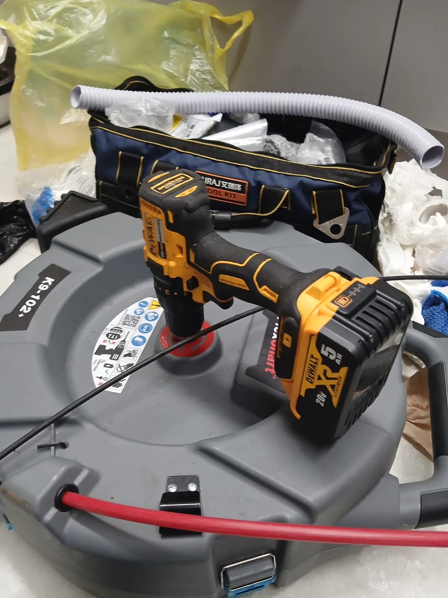
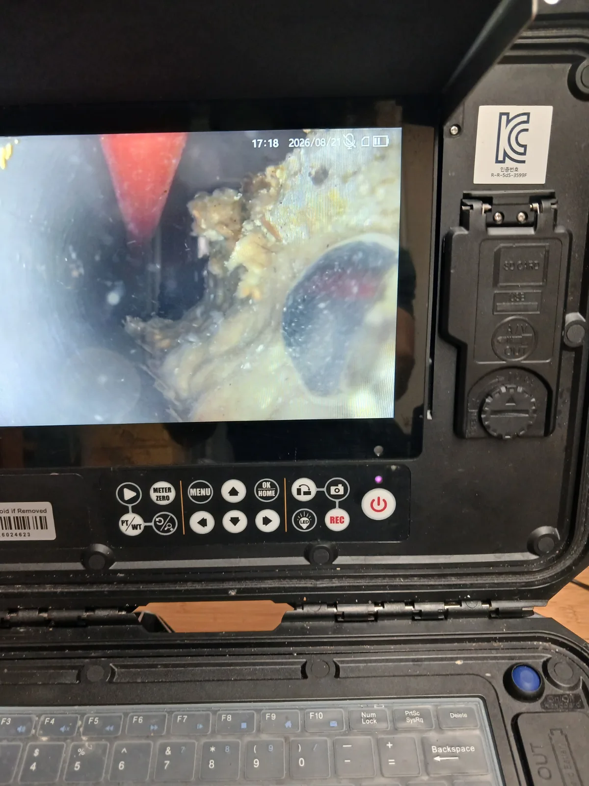

평택시 비전동 싱크대막힘, 현장 도착 후 진단
싱크대 배수가 원활하지 않다는 요청을 접수한 뒤 배관 내시경과 샤프트 장비를 준비해 평택시 비전동 가정집으로 신속하게 출동했습니다. 싱크대막힘을 전문적으로 처리해 온 숙련 기술자가 싱크대 하부와 연결 배관의 상태부터 순서대로 점검했습니다.
배관 입구만 확인해서는 막힘의 정확한 위치와 내부 누적 상태를 판단하기 어려웠습니다. 이에 배관 내시경 카메라를 싱크대 연결 배관 안쪽으로 투입해 내부 상태를 직접 확인했습니다.
내시경 화면에는 누렇게 굳은 기름때가 배관 벽면부터 내부 통로까지 가득 차 있는 모습이 선명하게 나타났습니다. 기름때가 오랫동안 겹겹이 누적되면서 배관의 유효 공간이 크게 좁아졌고, 싱크대에서 사용한 물이 원활하게 빠져나가지 못하는 상태였습니다.
1단계: 증상 확인과 필요한 장비 작업
먼저 배관 내시경을 천천히 이동시키며 기름때가 집중적으로 쌓인 구간과 배관 내부 상태를 확인했습니다. 겉으로 드러난 배수불량 증상만 보고 무작정 관통하지 않고, 실제 막힘 원인을 눈으로 확인한 뒤 작업 범위를 결정했습니다.
싱크대 배관으로 흘러 들어간 기름은 처음에는 액체 상태지만 배관 안쪽에서 온도가 낮아지면 벽면에 달라붙습니다. 이러한 현상이 반복되면 기름층이 점점 두꺼워지고 물이 지나갈 수 있는 공간이 좁아져 싱크대막힘으로 이어질 수 있습니다.
신라건축설비는 일시적으로 좁은 물길만 만드는 작업에 그치지 않습니다. 배관 내시경검사를 통해 막힘 위치와 원인을 정확하게 진단한 뒤 배관 구조와 누적 상태에 적합한 전문 장비를 선택합니다.

2단계: 원인 구간 처리와 정상 작동 확인
내시경검사로 확인한 막힘 구간에 샤프트 장비를 투입했습니다. 전동드릴로 샤프트를 회전시키며 배관 내부에 두껍게 굳은 기름때를 분쇄하고, 배관 벽면의 누적물을 제거하는 배관스케일링 작업을 진행했습니다.
샤프트의 회전력과 장비 반응을 확인하며 기름때로 좁아진 배수 통로를 다시 확보했습니다. 눈앞의 막힘만 일시적으로 관통하는 것이 아니라, 싱크대 배관 안쪽을 가득 채운 누적 원인을 직접 제거하는 데 중점을 두었습니다.
기름때 제거를 마친 후에는 싱크대에서 물을 흘려보내 통수검사를 진행했습니다. 물이 정체되거나 차오르지 않고 연결 배관을 따라 원활하게 배출되는 것을 최종 확인했습니다.

작업 결과와 재발 방지 안내
평택시 비전동 가정집 싱크대 배관을 가득 채우고 있던 기름때를 샤프트 작업으로 제거하면서 배수 흐름이 정상적으로 회복됐습니다. 배관 내시경검사로 막힘 원인을 정확하게 확인하고 해당 구간을 집중적으로 배관스케일링한 것이 이번 싱크대막힘 해결의 핵심이었습니다.
가정에서도 식용유나 기름진 국물을 싱크대에 그대로 흘려보내지 않는 것이 중요합니다. 뜨거운 물과 함께 내려보내더라도 배관 깊은 곳에서 온도가 낮아지면 기름이 굳어 다시 벽면에 달라붙을 수 있습니다.
남은 기름은 별도로 처리하고 싱크대 거름망을 꾸준히 관리하는 것이 좋습니다. 물이 예전보다 느리게 빠진다면 배관 내부가 완전히 막혀 싱크대역류로 이어지기 전에 전문 장비로 점검해야 피해와 재발 가능성을 줄일 수 있습니다.
신라건축설비는 평택시 비전동을 비롯한 경기 남부와 서울·경기 전 지역에 신속하게 출동하는 싱크대막힘·싱크대역류 전문업체입니다. 배관 내시경으로 막힘 위치와 원인을 정확하게 진단하고 현장 상태에 따라 석션, 관통, 샤프트, 배관스케일링 및 고압세척 작업을 진행합니다.
가정집의 생활 막힘부터 상가·빌딩의 공용배관과 메인 오수관, 배관 보수·교체 및 대형 배관공사까지 자체적으로 대응할 수 있습니다. 막힘을 빠르고 전문적으로 해결하면서 복잡한 배관 문제까지 진단부터 공사까지 한 번에 처리하는 것이 신라건축설비의 강점입니다.
최종 조치: 배관 내시경으로 기름때가 집중된 구간과 내부 상태를 확인한 뒤 샤프트 장비를 투입했습니다. 배관 안쪽을 가득 채운 기름때를 회전력으로 분쇄·제거하고, 작업 후 싱크대 통수검사를 진행해 배수 상태가 정상적으로 회복된 것을 확인했습니다.
현장 방문 전 확인하는 비용과 작업 범위
신라건축설비는 현장 증상과 배관 구조를 확인한 뒤 필요한 작업과 예상 비용을 안내합니다. 단순 관통으로 해결되는지, 배관내시경·석션·고압세척 또는 추가 장비가 필요한지는 현장 상태에 따라 달라집니다. 출장비와 야간 작업비, 추가 장비 비용이 발생할 수 있는 경우 작업 전에 먼저 설명하고 동의를 받은 범위에서 진행합니다.
업체를 선택할 때 확인할 사항
무조건적인 ‘0원’ 표현보다 실제 작업 범위, 추가 비용 조건, 사용 장비와 사후 대응 기준을 확인하는 것이 중요합니다. 해결되지 않았을 때의 비용 기준과 작업 후 동일 증상 발생 시 점검 범위를 사전에 문의해두면 불필요한 분쟁을 줄일 수 있습니다.
평택시 싱크대막힘 자주 묻는 질문
싱크대 물이 천천히 내려가면 바로 점검해야 하나요?
가정집 주방 싱크대의 물이 원활하게 내려가지 않아 정상적인 사용이 어려운 상태였습니다. 싱크대 하부의 연결 배관 안쪽에서 배수 흐름을 방해하는 막힘이 의심됐습니다.처럼 증상이 나타나더라도 원인은 현장마다 다를 수 있습니다. 장비와 배관 구조를 확인한 뒤 필요한 작업 범위를 안내합니다.
작업 전 비용을 알 수 있나요?
작업 전 증상과 현장 여건을 확인해 예상 범위와 비용을 먼저 안내합니다. 변기 탈거, 장비 추가 투입 또는 공용배관 작업이 필요한 경우 고객 동의 없이 임의로 진행하지 않습니다.
약품으로 해결되지 않으면 어떻게 하나요?
완료 후 정상 작동을 함께 확인하고 작업 범위에 따른 사후 안내를 드립니다. 동일 증상이 반복되면 현장 기록을 기준으로 원인을 다시 점검합니다.
싱크대막힘 서울·경기 출동지역
신라건축설비는 평택시 비전동 현장을 포함해 서울 25개 구와 경기도 31개 시·군의 배관 문제를 상담합니다. 현장 거리와 기사 배정 상황에 따라 출동 가능 여부를 먼저 안내드립니다.
서울 전 지역
강남구 · 강동구 · 강북구 · 강서구 · 관악구 · 광진구 · 구로구 · 금천구 · 노원구 · 도봉구 · 동대문구 · 동작구 · 마포구 · 서대문구 · 서초구 · 성동구 · 성북구 · 송파구 · 양천구 · 영등포구 · 용산구 · 은평구 · 종로구 · 중구 · 중랑구
경기도 주요 출동지역
수원시 · 용인시 · 고양시 · 화성시 · 성남시 · 부천시 · 남양주시 · 안산시 · 평택시 · 안양시 · 시흥시 · 파주시 · 김포시 · 의정부시 · 광주시 · 하남시 · 광명시 · 군포시 · 양주시 · 오산시 · 이천시 · 안성시 · 구리시 · 의왕시 · 포천시 · 양평군 · 여주시 · 동두천시 · 과천시 · 가평군 · 연천군